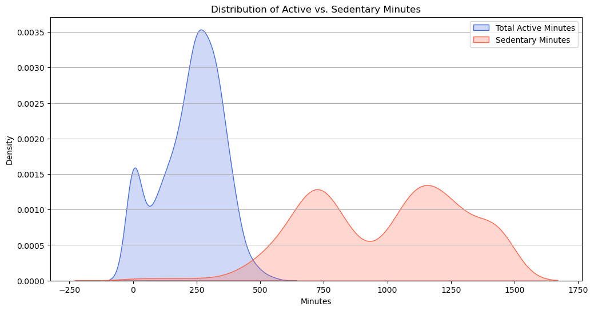

Bellabeat
Case Study
Overview
Bellabeat, a high-tech company that manufactures health-focused smart products, stands at the cusp of a market brimming with potential. As consumer health awareness rises, the demand for products that offer insights into one's health and wellness grows in tandem. The data derived from Bellabeat's current user base offers a treasure trove of insights.
In this report, I dive deep into the datasets capturing user behaviors across various metrics, ranging from daily activity levels to sleep patterns.The Problem
Derive actionable insights that can guide Bellabeat's strategic decisions and marketing campaigns.
Data Overview and Method
Key Datasets Include:
Methodology:
My approach involved a multi-step process:
Recommendation
Product Development and Enhancement
Advanced Sleep Analysis
Given the noticeable difference between time spent in bed and actual sleep duration, Bellabeat can introduce a feature that breaks down sleep into phases: deep sleep, light sleep, REM, and awake time. This will give users a more detailed understanding of their sleep quality and patterns.
Intensity-based Workouts
Considering the insights from MET values, Bellabeat can introduce a section in its app dedicated to high-intensity interval training (HIIT) workouts. These are short, intense bursts of physical activity, followed by low-intensity recovery periods.
Dietary Integration
With the average BMI hovering at the higher end of the 'normal' range, integrating a dietary feature can be beneficial. Users can log their meals, track calorie intake, and get personalized meal recommendations based on their fitness goals.
Stress Management Features
Bellabeat can introduce a 'Relax' or 'Mindfulness' section in its app, offering guided meditation sessions, breathing exercises, and perhaps even short, calming audio stories to help users unwind, especially before bedtime.
Social Integration
Considering some users have sporadic high-intensity activity (high MET values), introducing a feature where users can join group challenges or workouts can be motivating. A community section where users can share their achievements, join group challenges, or even engage in virtual workout sessions can make fitness more engaging.
Advanced Heart Monitoring
Given the relationship between MET values and heart rate, Bellabeat can introduce features that provide a more detailed heart rate analysis, perhaps even offering insights into heart rate variability (HRV) which can be an indicator of stress and overall health.
Implications for Marketing Strategy
Product Development and Enhancement
Holistic Health Approach
Bellabeat’s products, which cater predominantly to the female market, can be positioned to offer a comprehensive view of a user's health. By highlighting the ability to track both physical activity and sleep, Bellabeat can emphasize the importance of a balanced lifestyle. The insight that users are in bed longer than they actually sleep offers an opportunity for Bellabeat to incorporate features that help users understand and improve their sleep quality.
Emphasize on Activity Intensity Over Step Count
While the number of steps is a common metric, the MET data suggests that the intensity of activity is equally crucial. Bellabeat can differentiate its products by highlighting the importance of tracking METs alongside step counts. This approach underscores the idea that not just movement, but the intensity of movement, matters for overall health.
Personalized Fitness Recommendations
Given the variability in MET values for similar step counts, Bellabeat can use this insight to offer personalized activity recommendations. For instance, for users with high step counts but low MET values, the app can suggest more intense, short-duration workouts to boost MET values.
Weight Management Features
Considering the average BMI is on the higher end of the 'normal' range, Bellabeat can integrate features that help users with weight management. This can include diet tracking, calorie counting, and personalized fitness challenges based on the user's weight and fitness level.
Mental Well-being and Stress Management
The discrepancy between time spent in bed and actual sleep duration might be indicative of stress or mental health challenges. Bellabeat can introduce meditation, relaxation exercises, or even bedtime stories to help users de-stress, relax, and improve sleep quality.
Key Findings and Insights
Daily Activity Patterns
Sleep Patterns
Heart Rate and Physical Activity
Metabolic Equivalent of Task (METs)
Weight and BMI
Analytics
Data Familiarization
import pandas as pd
import matplotlib.pyplot as plt
import seaborn as sns
# Load the first data file
data_file_path = '/.../dailyActivity_merged.csv'
df_daily_activity = pd.read_csv(data_file_path)
# Display the first few rows of the dataset
df_daily_activity.head()
# Check for missing values
missing_values = df_daily_activity.isnull().sum()
# Get summary statistics for the numerical columns
summary_statistics = df_daily_activity.describe()
missing_values, summary_statistics
Sample Analysis & Visual
- Distribution of Total Steps
-
fig, axes = plt.subplots(nrows=3, ncols=1, figsize=(12, 15)) # Plot distribution of TotalSteps sns.histplot(df_daily_activity['TotalSteps'], kde=True, ax=axes[0], color='skyblue') axes[0].set_title('Distribution of Total Steps') axes[0].set_xlabel('Total Steps') axes[0].set_ylabel('Frequency') # Plot distribution of TotalDistance sns.histplot(df_daily_activity['TotalDistance'], kde=True, ax=axes[1], color='salmon') axes[1].set_title('Distribution of Total Distance (km)') axes[1].set_xlabel('Total Distance (km)') axes[1].set_ylabel('Frequency') # Plot distribution of Calories sns.histplot(df_daily_activity['Calories'], kde=True, ax=axes[2], color='lightgreen') axes[2].set_title('Distribution of Calories Burned') axes[2].set_xlabel('Calories Burned') axes[2].set_ylabel('Frequency') plt.tight_layout() plt.show()Distribution of Total Steps: Most users take between 0 to 10,000 steps daily, with a peak around 5,000 steps. There are some users who take more than 20,000 steps, but they are relatively fewer.
Distribution of Total Distance (km): The majority of users cover a distance between 0 to 10 km daily, with a peak around 2.5 km. Few users cover distances greater than 20 km. Distribution of Calories Burned: The calorie burn distribution is slightly right-skewed, with most users burning between 1500 to 3000 calories daily. There's a small peak around 0, indicating some users who didn't burn any calories (possibly they didn't wear the device or were inactive). These visualizations give us an initial understanding of the general activity levels of the users in the dataset. - Total Active Minutes Compared vs Sedentary Minutes
-

# Calculate total active minutes and compare with sedentary minutes df_daily_activity['TotalActiveMinutes'] = df_daily_activity['VeryActiveMinutes'] + df_daily_activity['FairlyActiveMinutes'] + df_daily_activity['LightlyActiveMinutes'] fig, ax = plt.subplots(figsize=(12, 6)) sns.kdeplot(df_daily_activity['TotalActiveMinutes'], shade=True, label='Total Active Minutes', ax=ax, color='royalblue') sns.kdeplot(df_daily_activity['SedentaryMinutes'], shade=True, label='Sedentary Minutes', ax=ax, color='tomato') ax.set_title('Distribution of Active vs. Sedentary Minutes') ax.set_xlabel('Minutes') ax.set_ylabel('Density') plt.legend() plt.grid(axis='y') plt.show()Total Active Minutes: This represents the sum of VeryActiveMinutes, FairlyActiveMinutes, and LightlyActiveMinutes. The distribution shows that most users have active minutes ranging from 0 to around 300 minutes daily, with a peak around 50 minutes.
Sedentary Minutes: This represents the time users are inactive. The distribution is right-skewed, indicating that a significant number of users have high sedentary minutes, with a peak around 600 minutes (or 10 hours). From this visualization, we can infer that while users do engage in active behaviors, they also spend a significant portion of their day being sedentary.
Full Dataset Analysis
Additional Information
Skills Used:
Training
Data Analytics training and guidance provided by Google's Data Analytics Professional Certificate through Coursera